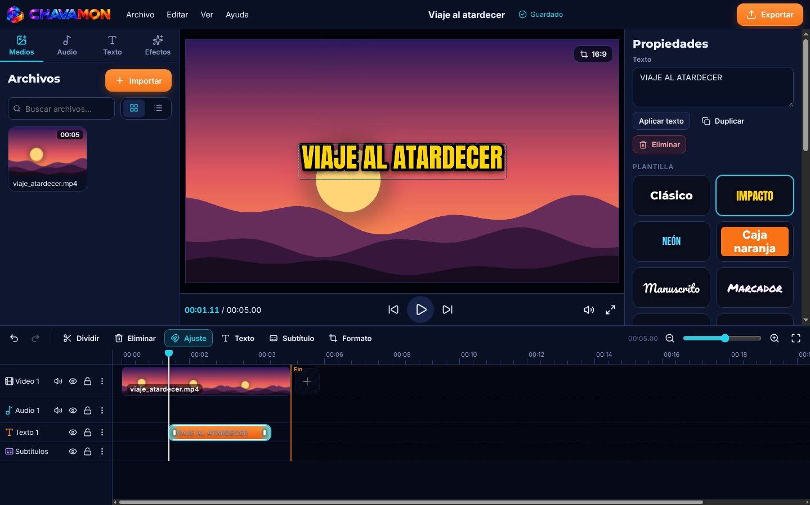
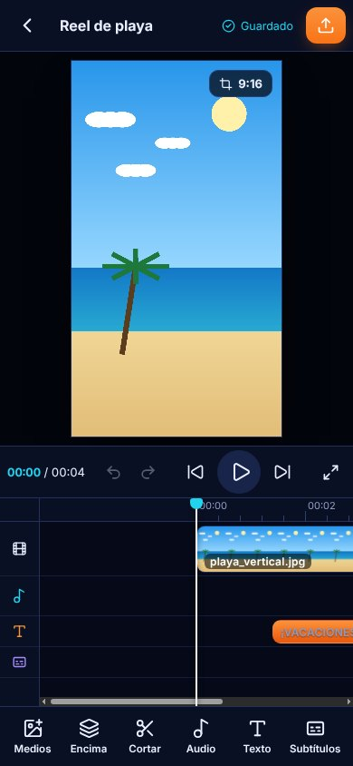

Edita tus videos sin marca de agua, sin cuentas y sin subir nada.
CHAVAMON trabaja en tu propio equipo: corta, acomoda fotos y videos en capas, agrega música, texto y subtítulos, y exporta MP4 listo para TikTok, Reels o YouTube.
Para Windows 10 y 11 de 64 bits · también en el navegador


Diseños
Pantallas reales de la app, sin retoque. Toca una para verla en grande.
Lo que puedes hacer
Lo esencial para editar videos para redes, sin pagar ni crear cuentas.
Capas (renglones)
Pon una foto o un video encima del video principal, en otro renglón de la línea de tiempo, mientras el de abajo sigue corriendo.
Cortar y acomodar
Divide en el cabezal, elimina, duplica y reacomoda. Ajuste magnético, deshacer y rehacer.
Texto y subtítulos
Plantillas como Clásico, Impacto, Neón, Caja naranja o Manuscrito, siete fuentes y subtítulos que exportas como SRT.
Música y audio
Tres pistas de música libre (CC0) incluidas y tu propia biblioteca de audios, en una pista aparte del video.
9:16 · 16:9 · 1:1
Vertical para TikTok, Reels y Shorts, horizontal para YouTube o cuadrado para el feed, con revisión de formato y encuadre.
Efectos y velocidad
Efectos de color, velocidad del clip de 0.25x a 4x y paquetes de efectos propios en JSON que nunca ejecutan código.
Exportar MP4
H.264 + AAC de 720p a 4K, a 24, 25, 30 o 60 fps. Te muestra el tamaño estimado y el espacio libre antes de guardar.
Nada se pierde
Guardado automático con copia de respaldo y recuperación si la app se cierra de golpe.
Privado de verdad
Tus videos se procesan y guardan solo en tu equipo. Sin telemetría, sin cuentas y sin publicar nada por ti.
Descargar
Gratis. Elige tu sistema.
Despertando el servidor…Windows 10/11
64 bits · x64Para casi todas las PC con procesador Intel o AMD. Reemplaza a Montoya Studio y conserva tus proyectos.
Instalador .exe 107 MBHuella SHA-256
5b49580d4f3fe24e36afeac9208da2ffd59d1e13809d0f3846595b085ca355d1Navegador
Web / PWASin instalar nada. En Chrome o Edge, en computadora y Android. Los proyectos se guardan en ese navegador.
Abrir el editor webPara videos MP4 (H.264) usa Chrome o Edge; otros navegadores pueden no abrirlos.
Linux
PróximamenteLinux Mint, Ubuntu, Debian y derivados. Mientras tanto, usa el editor web en Chrome.
Usar el editor webmacOS · Android · iPhone
Las versiones instalables para estos equipos vienen después. Mientras, usa el editor web.
Windows: "Windows protegió su PC"
El instalador aún no tiene firma digital, por eso Windows avisa. Elige Más información → Ejecutar de todas formas.
Verificar la descarga
En PowerShell, en tu carpeta Descargas: Get-FileHash .\CHAVAMON-0.1.1-windows-x64.exe. El resultado debe coincidir con la huella SHA-256.
Cómo está hecho
Un mismo núcleo para la computadora y el navegador.
Tecnología
El video se decodifica, se mezcla y se codifica con WebCodecs dentro de tu equipo. En la versión de escritorio la ventana corre aislada y la interfaz no puede conectarse a internet: solo abre los archivos que tú eliges.